source("data/custom_functions/SBStat.R")10 Basic statistics
Import custom functions
R warm-up, sampling from a remote sensor image and the normal distribution
Import data
First, read the image into a data frame.
dataKenya.df<-read.table("data/MSS.dat",header=T)
head(dataKenya.df) dn
1 49
2 52
3 52
4 52
5 52
6 52The variable is called "dn", the values correspond to reflection of visible red light from pixels in a Landsat MSS image of north-west Kenya
Explore the data
Compute a histogram, boxplot and other summary statistics of the data
names(dataKenya.df) [1] "dn"hist(dataKenya.df$dn)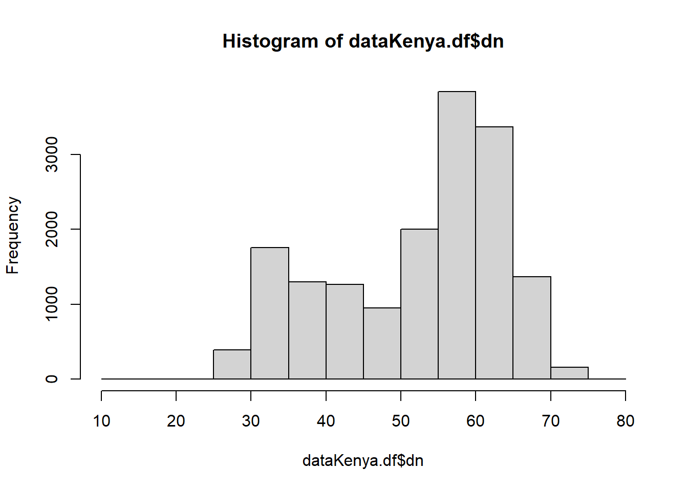
summa(dataKenya.df$dn) Mean Median Quartile.1 Quartile.3 Variance SD Skewness
[1,] 52.836 57 43 61 131.1566 11.45236 -0.5775254
Octile skewness Kurtosis No. outliers
[1,] -0.4666667 -0.9049057 0summaplot(dataKenya.df$dn)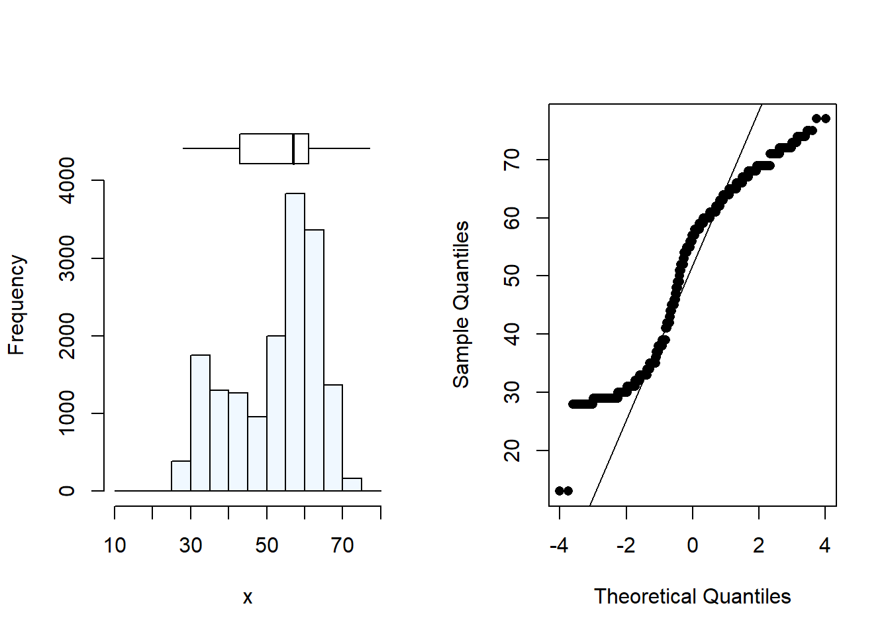
We used the summa() and summaplot() functions from SBStat above. Expand the following boxes to see the code for these functions.
Convert to a matrix
Now convert the data to a matrix (128 x 128 pixels)
kenya<-matrix(data=dataKenya.df$dn,nrow=128,ncol=128)Plot the image
The following command allows you to plot the image
image(kenya)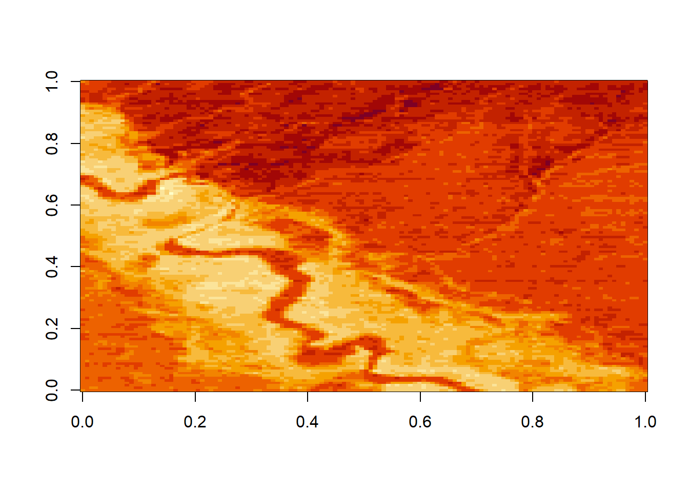
Select a sample size
We now treat the image as a field to be sampled. Select a sample size n
n<-100Sample the image
The command SRSimage(n,mat), from SBStat, will draw a simple random sample of size n from a matrix mat, and draw a map showing the sample locations
# Draw a sample of size n from the image
sample<-SRSimage(n,kenya)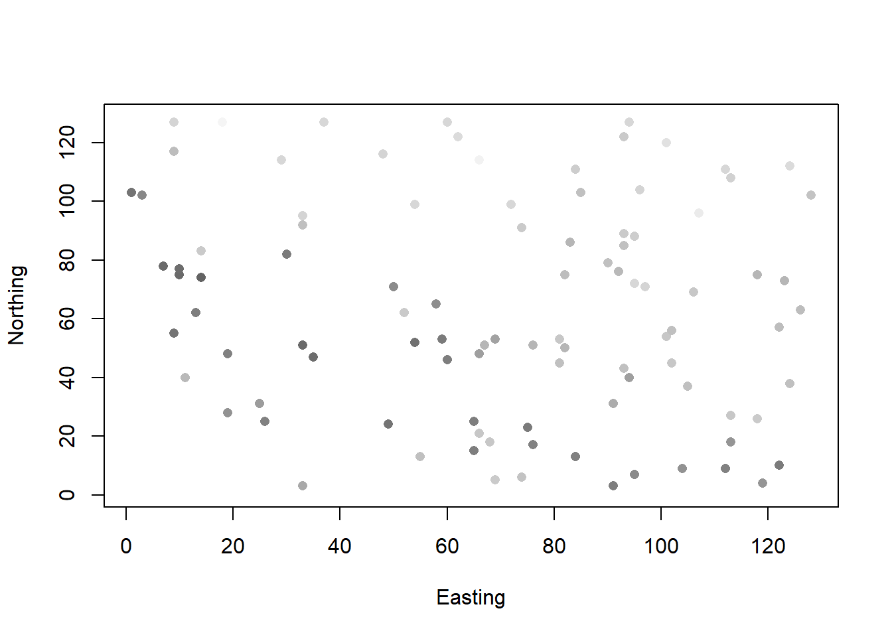
# Plot a histogram of sample locations
hist(sample)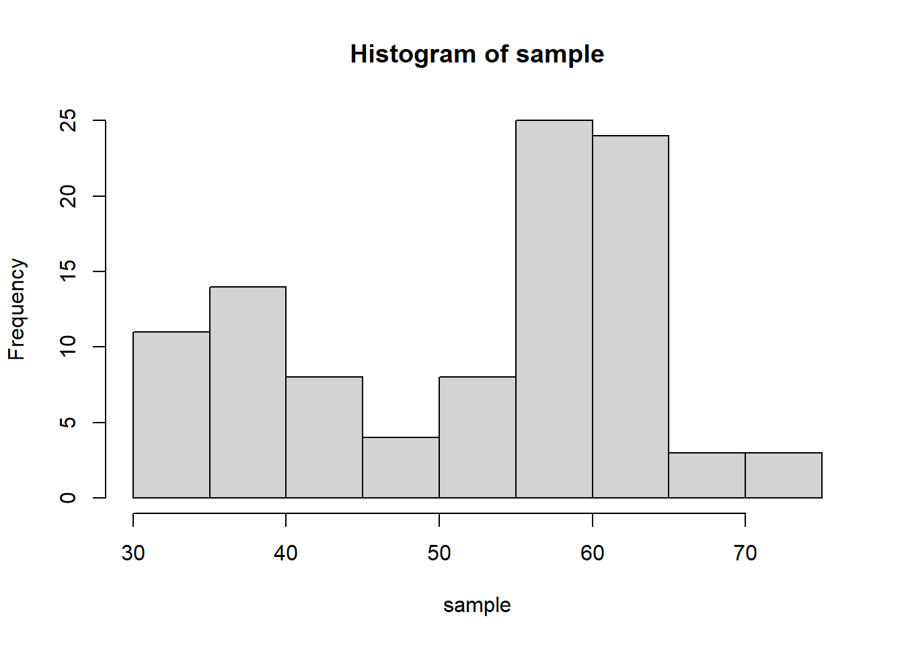
# Plot summary stats of the data in the sample
summa(sample) Mean Median Quartile.1 Quartile.3 Variance SD Skewness
[1,] 52.63 57 40.5 61 136.2961 11.67459 -0.4136408
Octile skewness Kurtosis No. outliers
[1,] -0.4285714 -1.163071 0The multisample() next command (from SBStat) will draw 1000 samples of size n. It shows the histogram and QQ plot for the 1000 sample means. Expand the following box to see the code for the multisample() function.
multisample(n,kenya)Some bits of R code to help with understanding of the normal distribution
pnorm(x,mean,sd) gives the probability of a normal random variable
# pnorm(x,mean,sd)
pnorm(0.0,0.0,1)[1] 0.5pnorm(2,0.0,1)[1] 0.97724991-pnorm(1.96,0.0,1)[1] 0.0249979Testing hypotheses: tasting tea and testing t
Bong beans come in pods of five. Bong wasps lay their single egg in a bong bean. If the probability of a single bean’s being parasitized is 0.1, what is the probability that a randomly selected pod will contain two parasitised beans?
dbinom(2,5,0.1)[1] 0.0729Tasting tea
We use the custom Tea_taste function from SBStat. Expand the following box to see the code for the Tea_taste function. :::{.callout-tip collapse=“true”} ## Tea_taste() function
print(Tea_taste)function (s, N, p0)
{
pv <- round((1 - pbinom((s - 1), N, p0)), 3)
message("The probability of getting ", s, " or more successes out of ",
N, " trials")
message("where the probability of success in a single trial is ",
p0)
if (pv >= 0.001) {
message("is ", pv)
}
else {
message("is < 0.001")
}
}N<-20 # number of trials
s<-15 # number of successes
p0<-0.5 # probability of a success under the null hypothesis
Tea_taste(s,N,p0)The probability of getting 15 or more successes out of 20 trialswhere the probability of success in a single trial is 0.5is 0.021t-tests to compare independent samples
We use the custom T_test() function from SBStat. Expand the following box to see the code for the T_test() function.
data.df<-read.table("data/chicks.dat",header=T,stringsAsFactors = T)
names(data.df)[1] "Weight.gain" "Feed" T_test(variable="Weight.gain",groups="Feed",data=data.df)
t-test to compare independent random samples from two groups
Estimated group means mean in group casein mean in group soybean
323.58 246.43
Difference between group means is 77.15
95% confidence interval for this difference is 29.19 to 125.1
The t-statistic is 3.3199 with 24 degrees of freedom
The probability of obtaining evidence this strong or stronger if the true difference is zero is 0.0028692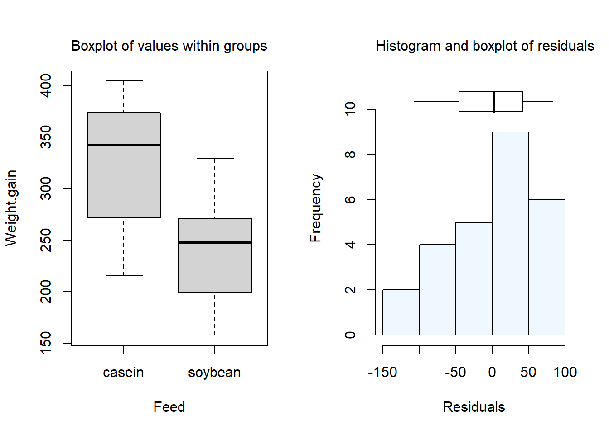
Analysis of variance with lm()
Example 1. Data in cabbage.dat
Yields of spring cabbage from plots to which one of four treatments was applied. The allocation of treatments to plots was done at random. Treatments are:
C: Control, no nitrogen applied.AS: Nitrogen applied as ammonium sulphateAN: Nitrogen applied as ammonium nitrateNC: Nitrogen applied as nitrochalk (ammonium nitrate + chalk)
# Import data
data_ca.df<-read.table("data/cabbage.dat",header=T,stringsAsFactors = T)
# Explore data
names(data_ca.df)[1] "Treatment" "Yield" # (i) Initial model fit
mod<-lm(Yield~Treatment,data=data_ca.df)
mod<-lm(log(Yield)~Treatment,data=data_ca.df)
# (ii) Inspect the residuals
summa(mod$residuals) Mean Median Quartile.1 Quartile.3 Variance SD
[1,] 3.252607e-18 -0.008836858 -0.02960795 0.04914689 0.00412858 0.06425403
Skewness Octile skewness Kurtosis No. outliers
[1,] -0.2250617 -0.02602487 -1.170367 0summaplot(mod$residuals)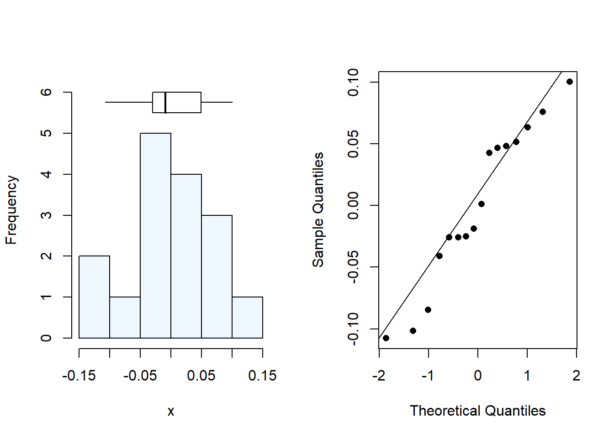
plot(mod$fitted.values,mod$residuals,pch=16)
# (iii) Test the general or omnibus null hypothesis
anova(mod)Analysis of Variance Table
Response: log(Yield)
Df Sum Sq Mean Sq F value Pr(>F)
Treatment 3 0.94845 0.316150 61.261 1.513e-07 ***
Residuals 12 0.06193 0.005161
---
Signif. codes: 0 '***' 0.001 '**' 0.01 '*' 0.05 '.' 0.1 ' ' 1boxplot(Yield~Treatment,data=data_ca.df)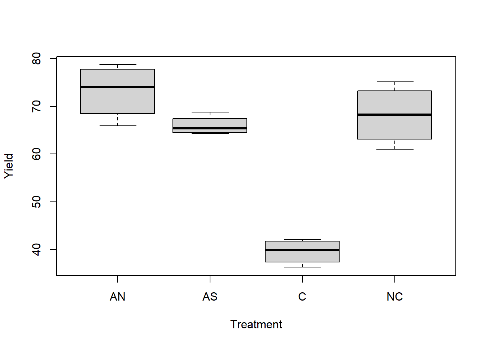
# Make contrast coefficients
data_ca.df$C1<--1
data_ca.df$C1[which(data_ca.df$Treatment=="C")]<-3
data_ca.df$C2<--1
data_ca.df$C2[which(data_ca.df$Treatment=="C")]<-0
data_ca.df$C2[which(data_ca.df$Treatment=="AS")]<-2
data_ca.df$C3<--1
data_ca.df$C3[which(data_ca.df$Treatment=="C")]<-0
data_ca.df$C3[which(data_ca.df$Treatment=="AS")]<-0
data_ca.df$C3[which(data_ca.df$Treatment=="NC")]<-1
mod<-lm(log(Yield)~Treatment,data=data_ca.df)
mod2<-lm(log(Yield)~C1+C2+C3,data=data_ca.df)
anova(mod)Analysis of Variance Table
Response: log(Yield)
Df Sum Sq Mean Sq F value Pr(>F)
Treatment 3 0.94845 0.316150 61.261 1.513e-07 ***
Residuals 12 0.06193 0.005161
---
Signif. codes: 0 '***' 0.001 '**' 0.01 '*' 0.05 '.' 0.1 ' ' 1anova(mod2)Analysis of Variance Table
Response: log(Yield)
Df Sum Sq Mean Sq F value Pr(>F)
C1 1 0.92682 0.92682 179.5913 1.4e-08 ***
C2 1 0.01147 0.01147 2.2234 0.1617
C3 1 0.01015 0.01015 1.9677 0.1860
Residuals 12 0.06193 0.00516
---
Signif. codes: 0 '***' 0.001 '**' 0.01 '*' 0.05 '.' 0.1 ' ' 1Example 2 Data in cashmore.dat
These are data on soil properties from sites in different soil series or classes (the variable "Soil_Series", which is read in as a factor).
Use the LM and ANOVA to examine evidence that differences between the soil series account for variation in water content (GWC_T, GWC_S) and OM content.
The soil series are quite distinct, note the following information about them
| Series Name | Symbol | Parent | material |
|---|---|---|---|
| Lowlands | Lw | Lower Greensand | Colluvial* |
| Hallsworth | Ha | Lower Greensand | Pelostagnogley** |
| Nercwys | Ne | Lower Greensand | Stagnogley** |
| Evesham | Ev | Gault Clay | |
| Bardsey | Ba | Gault Clay | |
| Enborne | En | Alluvial Clay |
- The colluvial soil is relatively coarse material over the LGS
- The stagnogleys are finer material, drainage is impeded.
- In the pelostagnogley the finer minerals are prone to swell when wet and shrink and crack when dry.
- The Evesham series is formed in heavy clay, the Bardsey series and
- Enborne series are both sandy clay loams over clay loams.
data_csh.df<-read.table("data/cashmore.dat",header=T,stringsAsFactors=T)
names(data_csh.df)[1] "GWC_T" "GWC_S" "pH_T" "pH_S" "OM_T"
[6] "OM_S" "Soil_Series"mod<-lm(log(GWC_S)~Soil_Series,data=data_csh.df)
summa(mod$residuals) Mean Median Quartile.1 Quartile.3 Variance SD
[1,] -6.919243e-18 -0.01001593 -0.06312576 0.04554943 0.008789249 0.093751
Skewness Octile skewness Kurtosis No. outliers
[1,] 1.459066 -0.009520071 3.972526 1summaplot(mod$residuals)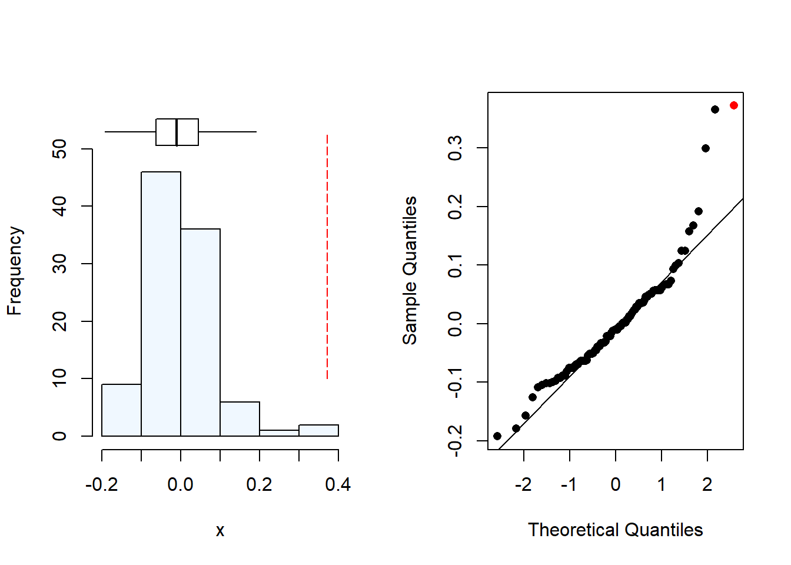
plot(mod$fitted.values,mod$residuals,pch=16)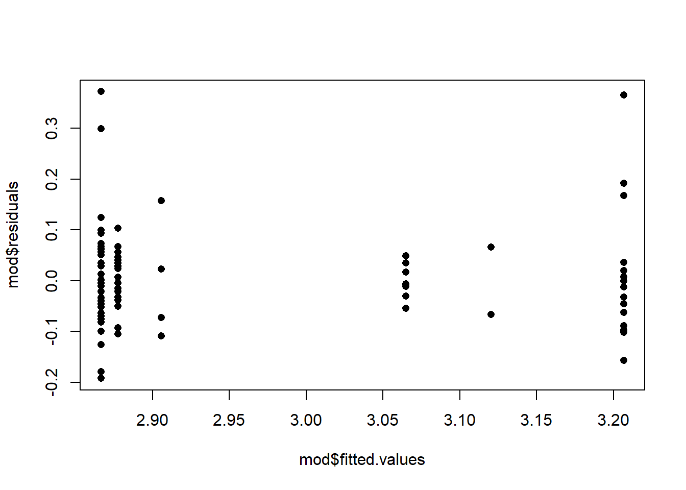
anova(mod)Analysis of Variance Table
Response: log(GWC_S)
Df Sum Sq Mean Sq F value Pr(>F)
Soil_Series 5 1.73206 0.34641 37.422 < 2.2e-16 ***
Residuals 94 0.87014 0.00926
---
Signif. codes: 0 '***' 0.001 '**' 0.01 '*' 0.05 '.' 0.1 ' ' 1boxplot(GWC_T~Soil_Series,data=data_csh.df)
mod<-lm(OM_T~Soil_Series,data=data_csh.df)
summa(mod$residuals) Mean Median Quartile.1 Quartile.3 Variance SD
[1,] 2.068549e-17 -0.04007519 -0.4489706 0.3897472 0.6811274 0.8253044
Skewness Octile skewness Kurtosis No. outliers
[1,] 0.4573979 0.1044714 1.081736 1summaplot(mod$residuals)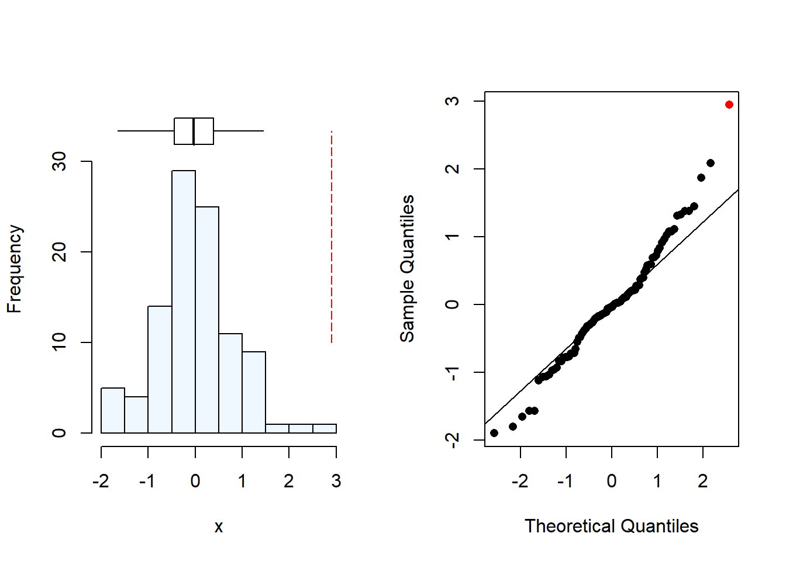
plot(mod$fitted.values,mod$residuals,pch=16)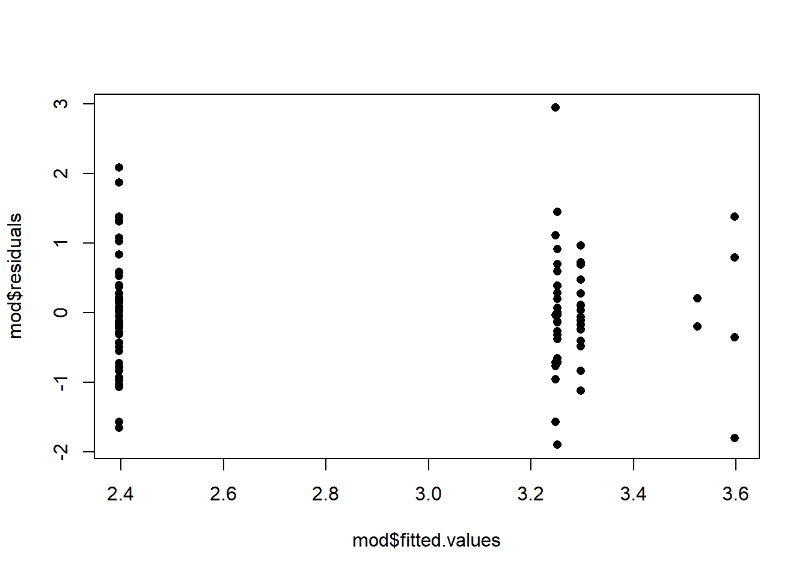
anova(mod)Analysis of Variance Table
Response: OM_T
Df Sum Sq Mean Sq F value Pr(>F)
Soil_Series 5 21.213 4.2426 5.9142 8.497e-05 ***
Residuals 94 67.432 0.7174
---
Signif. codes: 0 '***' 0.001 '**' 0.01 '*' 0.05 '.' 0.1 ' ' 1boxplot(OM_T~Soil_Series,data=data_csh.df)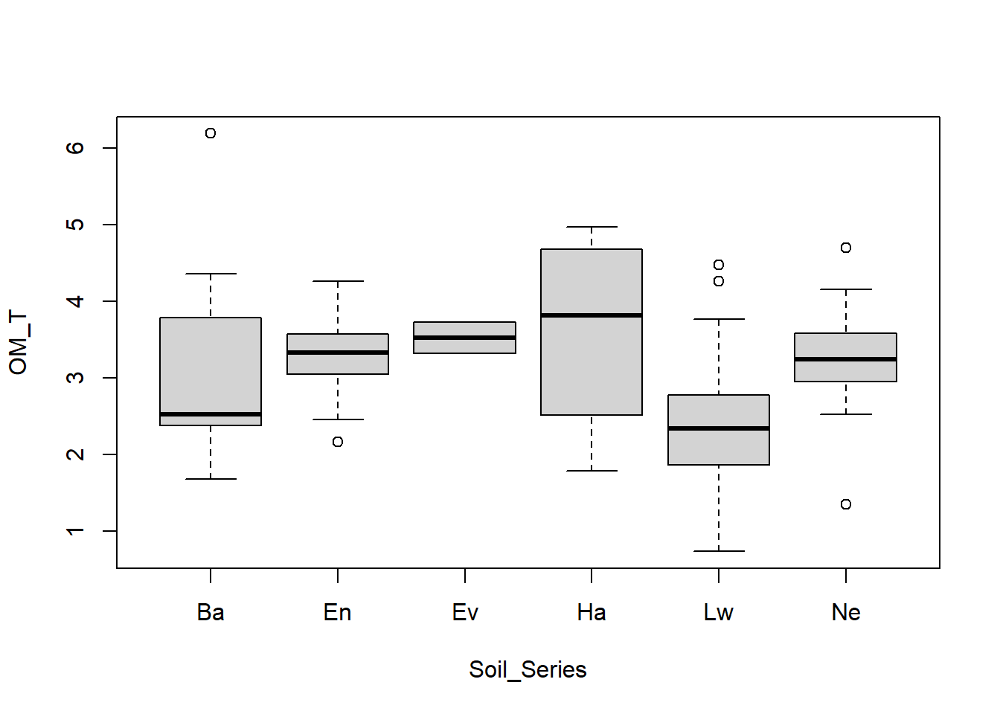
Regression analysis with lm()
Example 1.
data.df<-read.table("data/soil.dat",header=T)
names(data.df)[1] "clay" "SOC" "pHw" "pHCaCl"# Plot pH in CaCl2 against pH in water
plot(data.df$pHCaCl,pch=16,data.df$pHw,xlab="pH in CaCl2",ylab="pH in water",
xlim=c(2,8.5),ylim=c(2,8.5))
#Draw the bisector, or 1:1 line
lines(c(2,8.5),c(2,8.5))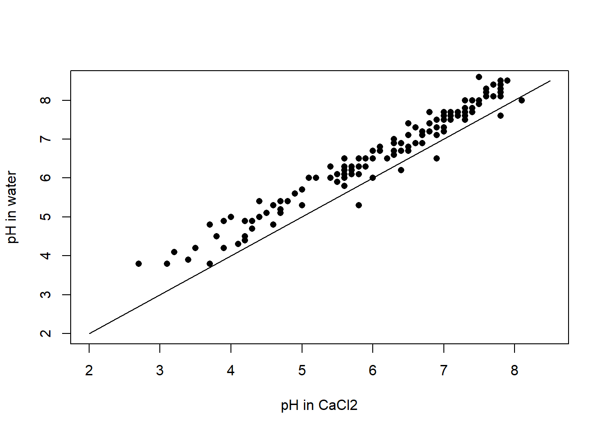
#Compute the correlation coefficient between the two variables
cor(data.df$pHCaCl,data.df$pHw)[1] 0.9788838Regression model using lm
mod<-lm(pHw~pHCaCl,data=data.df)
summary(mod)
Call:
lm(formula = pHw ~ pHCaCl, data = data.df)
Residuals:
Min 1Q Median 3Q Max
-1.0231 -0.1284 0.0251 0.1465 0.6679
Coefficients:
Estimate Std. Error t value Pr(>|t|)
(Intercept) 0.83364 0.10595 7.869 9.09e-13 ***
pHCaCl 0.94646 0.01676 56.457 < 2e-16 ***
---
Signif. codes: 0 '***' 0.001 '**' 0.01 '*' 0.05 '.' 0.1 ' ' 1
Residual standard error: 0.2522 on 139 degrees of freedom
Multiple R-squared: 0.9582, Adjusted R-squared: 0.9579
F-statistic: 3187 on 1 and 139 DF, p-value: < 2.2e-16# Assumptions
summa(mod$residuals) Mean Median Quartile.1 Quartile.3 Variance SD
[1,] 1.963886e-17 0.02509984 -0.1284438 0.1465173 0.06314678 0.2512902
Skewness Octile skewness Kurtosis No. outliers
[1,] -0.8745355 -0.1175253 2.275353 1summaplot(mod$residuals)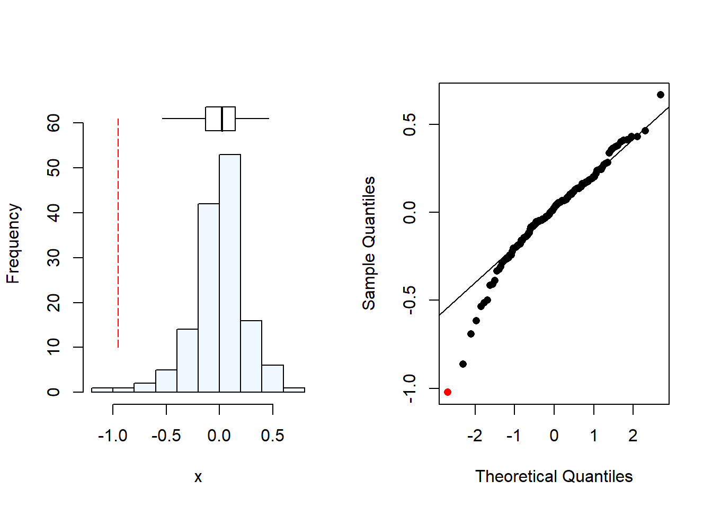
plot(mod$fitted,mod$residuals,xlab="Fitted values",ylab="Residuals",pch=16)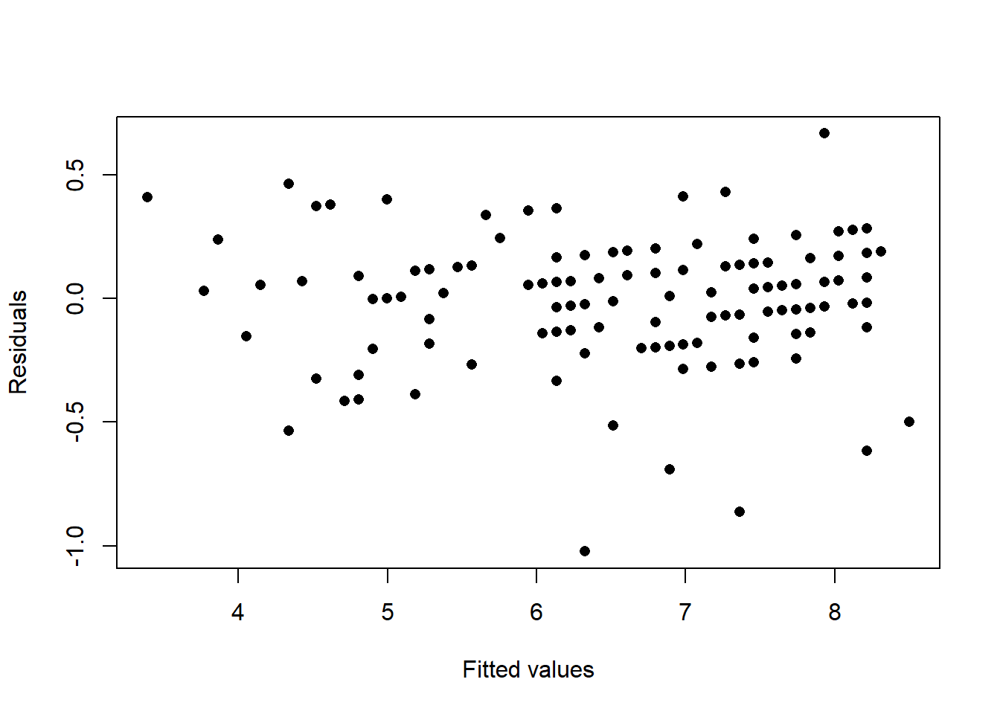
Draw the regression line
#First, replot the data
plot(data.df$pHCaCl,data.df$pHw,pch=16,xlab="pH in CaCl2",ylab="pH in water",
xlim=c(2,8.5),ylim=c(2,8.5))
# Now, chose a minimum and maximum x value for the line
minx<-2
maxx<-8.5
regline(minx,maxx,mod)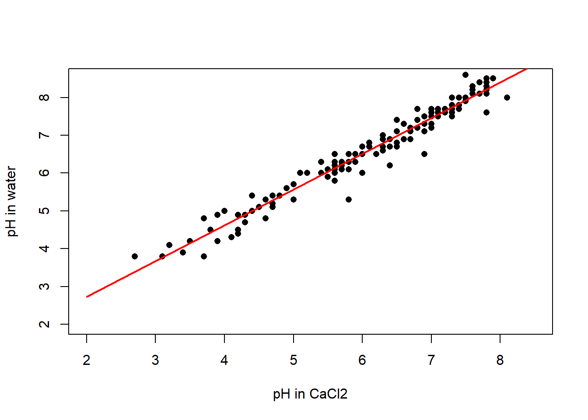
Using the regression model for prediction
Now predict the pH in water for some values in CaCl (these would be new samples for which we only know pHCaCl).
values for prediction: we present a set of 5 values 4.2,5.6,6.4,7.3,8.1
# make a vector of the values for prediction
pHCaCl<-c(4.2,5.6,6.4,7.3,8.1)
# make a dataframe from these values
pHCaCl.df<-data.frame(pHCaCl)colnames(pHCaCl.df)<-"pHCaCl"
names(data.df)[1] "clay" "SOC" "pHw" "pHCaCl"Now make the predictions, the first term is the model object, the second is the data frame with the pH in CaCl2 values for which we want predictions.
pHwaterpred<-predict(mod,pHCaCl.df,
interval="prediction",level=0.95)
print(pHwaterpred) fit lwr upr
1 4.808759 4.304030 5.313489
2 6.133798 5.633020 6.634577
3 6.890963 6.390521 7.391406
4 7.742774 7.241032 8.244516
5 8.499939 7.995562 9.004316The first column is the prediction, the second two are the upper and lower bounds of each 95% confidence interval for a point prediction. Note that this is the confidence interval for a point prediction (i.e. a new single measurement).